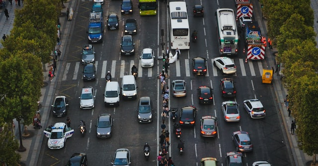
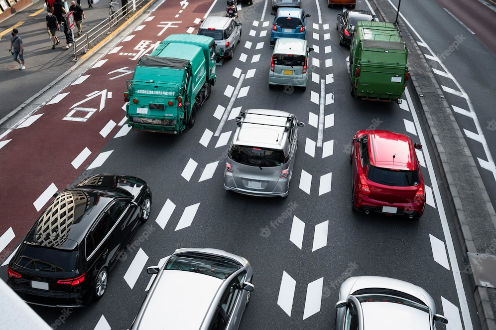

OUR PRODUCTS
i2V Complete Proactive Video Products

DEMO - VIDEO ANALYTICS
With A User-Friendly Interface, We Make Analytics Simply More Effective.
Speed Violation Detection

Automatic Traffic Count & Classification

Automatic Number Plate Recognition
Fire & Smoke Detection
I2v Introduction
i2V stands for Intelligent Integrated Video. i2V is a technology R&D company focusing on design, development and production of Intelligent Surveillance solutions. i2V specializes in Proactive Video Surveillance products with an aim of providing high quality software to clients worldwide.
Contact Us For A Free Consultation
Our team will be thrilled to expand our approach to ease your surveillance experience and provide you with sophisticated solutions.
Let's find you the best together!
+91 981-005-6691 | +91 830-766-5562
i2v@i2vsys.com
Software Technology Parks of India, 3rd Floor, Plot No 30, Electronic city, Sector 18 Gurugram-122015, Haryana, India